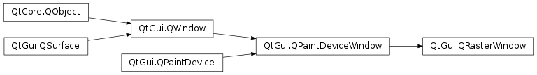

QRasterWindow¶
Detailed Description¶
PySide2.QtGui.QRasterWindowis a convenience class for usingPySide2.QtGui.QPainteron aPySide2.QtGui.QWindow
PySide2.QtGui.QRasterWindowis aPySide2.QtGui.QWindowwith a raster-based, non-OpenGL surface. On top of the functionality offered byPySide2.QtGui.QWindow,PySide2.QtGui.QRasterWindowadds a virtualPySide2.QtGui.QPaintDeviceWindow.paintEvent()function and the possibility to open aPySide2.QtGui.QPainteron itself. The underlying paint engine will be the raster one, meaning that all drawing will happen on the CPU. For performing accelerated, OpenGL-based drawing, usePySide2.QtGui.QOpenGLWindowinstead.Internally the class is thin wrapper for
PySide2.QtGui.QWindowandPySide2.QtGui.QBackingStoreand is very similar to the Raster Window Example that uses these classes directly.
-
class
PySide2.QtGui.QRasterWindow([parent=nullptr])¶ Parameters: parent – PySide2.QtGui.QWindowConstructs a new
PySide2.QtGui.QRasterWindowwithparent.
© 2018 The Qt Company Ltd. Documentation contributions included herein are the copyrights of their respective owners. The documentation provided herein is licensed under the terms of the GNU Free Documentation License version 1.3 as published by the Free Software Foundation. Qt and respective logos are trademarks of The Qt Company Ltd. in Finland and/or other countries worldwide. All other trademarks are property of their respective owners.